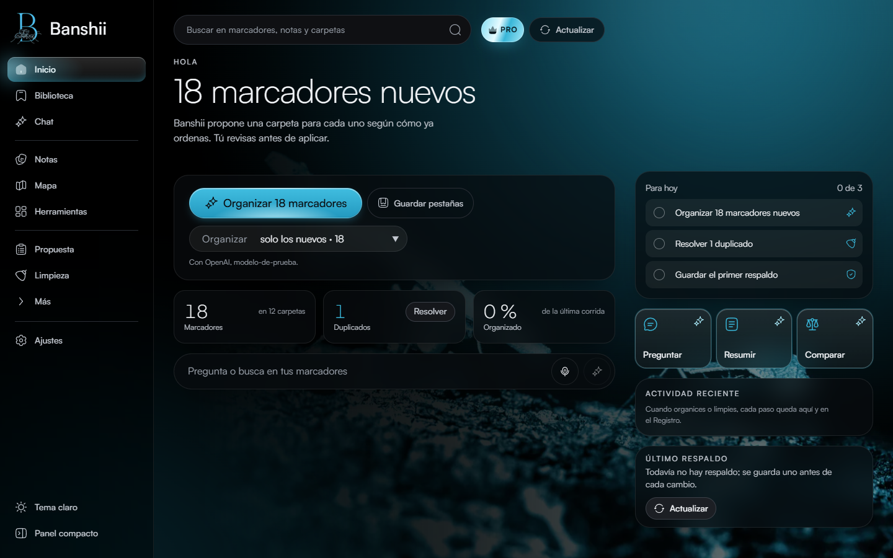

Aprendizaje · aplicación móvil · 2025–2026
Appy
Una experiencia de aprendizaje para niños y familias, con actividades, juegos y un personaje que acompaña el progreso.
Flutter · experiencia educativaConocer proyecto
Portafolio de proyectos
Diseño y construyo productos digitales que resuelven problemas concretos: aprendizaje, salud, organización y juego. Aquí puedes conocer lo que hacen, verlos en acción y explorar su proceso.
01 / Trabajo seleccionado
Cada tarjeta cuenta qué problema aborda el producto. El código de los proyectos privados permanece en sus repositorios de trabajo.
Aprendizaje · aplicación móvil · 2025–2026
Una experiencia de aprendizaje para niños y familias, con actividades, juegos y un personaje que acompaña el progreso.
Salud · gestión · 2025–2026
Un sistema web para ordenar insumos y movimientos de inventario en el Centro de Atención Integral de Salud de la UABC.

Productividad · navegador · 2026
Un organizador inteligente de marcadores con extensión de navegador, escritorio y flujos locales de clasificación.

Deporte · simulación · 2025–2026
Una plataforma interactiva para imaginar resultados, armar cuadros y explorar escenarios del Mundial 2026.
Conocimiento personal · automatización · 2026
Un motor para capturar, ordenar y recuperar conocimiento personal que mantiene separados el sistema y los datos.

Comunidad · Android · 2026
Reportes comunitarios sobre problemas del campus, con evidencias, respaldo y seguimiento.
Salud · aplicación móvil · 2026
Una aplicación Flutter con flujos para personal paramédico, incidentes y consulta de información clínica.

Audio · herramienta local · 2026
Una herramienta local para transcribir videos de TikTok y trabajar con el texto resultante.
Música · concepto web · 2025
Una propuesta de plataforma social alrededor de la música. Sus maquetas muestran descubrimiento, comunidad y espacios para artistas; el repositorio conserva un prototipo de acceso.
02 / Cómo trabajo
Me interesa que una idea sea entendible, usable y útil para personas reales. Esta selección reúne proyectos personales, prototipos y trabajo en equipo; cada presentación explica su alcance y su estado.
Seguir explorando en GitHub